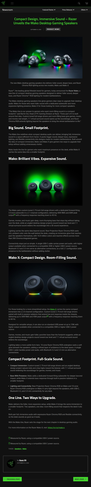

Новостной Telegram-бот
От материалов из нескольких источников до готовой публикации на русском языке.
- Три типа источниковRSS, YouTube и email-рассылка сходятся в один конвейер
- Отбор и адаптация через LLMподробный обзор для новых устройств, краткая сводка для событий
- Публикация без участия человекарусский текст, изображения и ссылки на источники

Слева — исходная статья (press.razer.com), которую бот забрал из RSS-ленты; справа — его публикация в интерфейсе Telegram. Боту можно прислать ссылку на любую статью — он подготовит пост (раз в сутки).